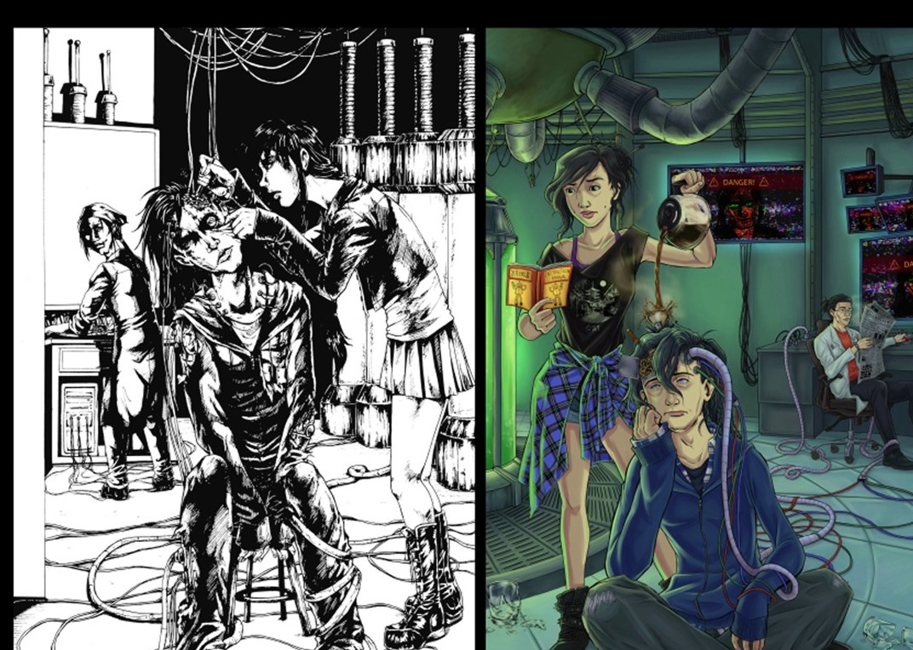

The name before Nocturne 21
Nocturne 21 was originally called “Watashi no Ame” (“My Rain”). After a few years, I wasn’t happy with it. In college, after days of brainstorming and plenty of terrible ideas, I finally landed on Nocturne 21.
Welcome to the twentieth anniversary special! Here are some spoiler-free fun facts, creative detours, and epic glow-ups from the long and occasionally ridiculous history of Nocturne 21.

Adapted from the original twentieth anniversary special. Spoiler-free, with all the embarrassing bits intact.
Nocturne 21 was originally called “Watashi no Ame” (“My Rain”). After a few years, I wasn’t happy with it. In college, after days of brainstorming and plenty of terrible ideas, I finally landed on Nocturne 21.
In the third version, Kai was simply “Boy” or “Kid.” In version four, Kuro tried a different name for him every day until one stuck. Eventually, after a lot of head-banging, I settled on Kai. I liked how simple it was and how it appears in several cultures. The Snow Queen connection—and its mirror shard—was the final nudge.
The original Volume One was a mixture of Yu Yu Hakusho, Rurouni Kenshin, Ranma 1/2, and Inuyasha. If you’re wondering how that worked: it didn’t. Also, there were fairies. Da fuq?
Kai didn’t have amnesia until the third iteration. At first it was just a convenient plot device. In the current version, it became a crucial part of who Kai is, with real emotional consequences and a much bigger role in the mystery.
Kuro appeared twice in the original Volume One. He was basically there to give the hero what he needed: a roof over his head and… swords, apparently. That was it.
No, actually, he was just awful. Nothing redeeming about him. He can still be an ass now, but at least he has endearing qualities.
Kuro and Shin originally didn’t know each other. Kiri and Shin weren’t father and son. Kiri was a typical manga high-school antagonist, while Shin was the bully teacher. When I moved the story from Japan to a small New England town, I started rethinking their relationships. Making them family gave the story a whole new dimension.
Even after moving the story to the United States, Kuro’s house stayed Japanese-style. I even drew it that way for the current version before realizing the design didn’t fit. When I went back to color the early pages, I had to Photoshop a new house over the old one.
Version one went on for more than ten volumes. The kids had all become adults before I finally started over.
All the secrets and mystery I’ve built up in the current run were spoiled in the first two pages of the original version.
Yoshiko’s original name was Yoshiro. About ten years in, I finally researched it and realized Yoshiro is typically a boy’s name. I changed it—and nodded to the mistake in Chapter 3, when Triffany “accidentally” calls her Yoshiro.
Kuro’s name was originally Kurogasuke, which is… not even a real name. Teenage me did not do research. I shortened it to Kuro in version four and eventually chose a kanji associated with “expert.”
Shingen didn’t have a decided first name until version four. I chose the name of a Japanese warlord because I thought giving a wimpy, anxious guy a badass name would be funny.
Kiri makes the same dumb mistake of challenging Kai in every version. He gets his ass kicked every time.